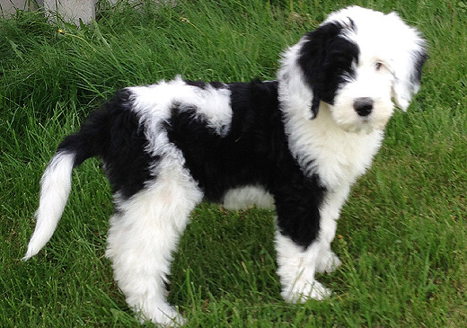
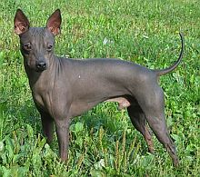

Dogs
This is a website about dogs.
Link to dog breeds
This large picture of a sheepadoodle, a mix of a sheepdog and a poodle. Here is another picture of a sheepadoodle. So cute, right?

Donate to a local dog shelter or adopt a dog. There are many dogs in need of help and adoption!
Some dogs have fur, some have hair, and some have neither! Here are some pictures of dogs with neither.


Another interesting dog is the basset hound. Here is a basset hound picture.

Did you know that often certain types of dogs are supposed to be good at swimming? Like the poodle, the Irish water spaniel, and the labrador retreiver. They aren't always good at it though. My dog is a labradoodle and he can't swim! Here are some pictures of dogs that CAN swim.


There are even doggy life jackets if your dog can't swim! I think almost all dogs are very cute. Here are some extremly cute dog pictures.


The lab (short for labrador retiever) is a common dog that is a good swimmer. It has short fur that can be golden, white, black or chocolate brown. They are very cute.


These are some basenjis.